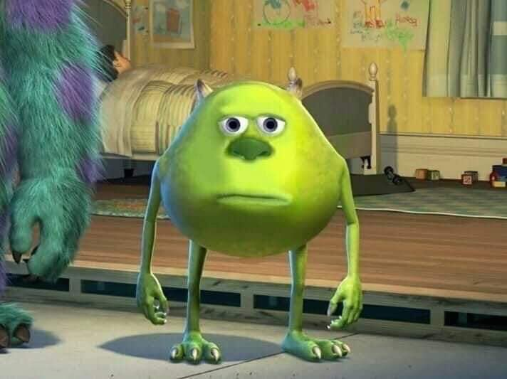

Día a día 
| El día a día en esta cuarentena cada vez me hace pensar en verdad lo mucho que te amo y te extraño. Cada día din mi bb es un día menos de felicidad. Te necesito conmigooooo aquí y ahora así nos damos muchos besitos y nos acurrucamos mucho mucho. Y es que extraño estar contigo, besarte, darte cariñitos, lamerte la naricita y que hagas ese sonidito de sorpresa que me mataba cada vez un poco más <3<3<3<3 OMG eres tan hermosa. Ojalá termine pronto esta cuarentena qlia asquerosaaaaaaaa |
Fin de la cuarentena
| Cuando al fin se acabe esta cosa asquerosa que odio con todo mi ser, y al fin nos podamos ver, te voy a besar tanto y tantas veces shikitaaaa... quedarás locaaa jsjsjsjs haré que se te caigan los labios de tantos besitos mi princesa bella <3<3<3 Harémos un montón de cosas como ir al mall, al cine, a los parques a respirar aire fresco y no puedo ni imaginarme cuantas peliculas de netflix malas "veremos" (if u know what i mean beauty <3) comiendo cositas ricas (y comiéndonos <3) |